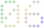

CASE STUDYAlmanac
Almanac helps UK suppliers decide whether to give a business customer credit, and on what terms. The customer applies once, Almanac runs the business checks against the supplier’s own credit policy and drafts an analysis, and a named person makes the decision, recorded with its evidence. I joined as the founding designer.

At a glance
The problem
Business-to-business trade runs on credit: a supplier delivers now and the customer pays in 30 or 60 days. Deciding who gets that credit is often a PDF application form, a chain of emails chasing references, and a credit report.
A credit report covers the company. A credit decision also needs to know who is applying, what they are asking for, and whether that fits the supplier’s own policy. Those pieces usually live in different places, and the reasoning behind the decision is rarely written down.
Principles
- One credit file per customer. The application, every check, the analysis and the decision live in the same record, from the first form to monitoring after approval.
- The AI drafts, a person decides. The analysis is advisory and says so. Only a named reviewer can approve, request more information or decline.
- Every fact shows its source. Each finding says where it came from and when it was retrieved, and the decision record cannot be edited afterwards.
- The supplier’s policy, in their words. Checks run against a credit policy written in plain language, not a grid of thresholds.
The credit file
The reviewer lands on what needs attention: the AI recommendation with the limit and terms it suggests, then the checks that failed and need a judgement. Company information, the credit bureau report, open banking, payment mandate, trade references and documents each have their own tab.

A policy written in plain language
Suppliers describe who they are, how much risk they will take, their credit insurance and what they need from every applicant, in their own words. The application and monitoring checks, and the AI’s recommendations, are measured against that policy, so a recommendation can say which rule it is applying.
The customer and referee side
The business applying for credit gets a guided application instead of a PDF: company, contacts, credit terms, payment mandate, bank reference, trade references and documents, saved as they go. Bank access is read-only and can be withdrawn.
Trade referees answer through their own link, usually on a phone, and are told up front how their answers will be used.
After approval
Credit decisions go stale. Once a customer is approved, monitoring checks keep running against the same policy, and the AI recommends when a limit or terms should change, with the reasons. The reviewer still makes the change.

Designing every state
The interactive prototype covers 90 screens and 537 states across the supplier portal, the customer portal and application, the referee links, sign-in and onboarding, and the platform admin portal. That includes the states that are easy to skip: empty, loading, failed checks, an unavailable credit bureau, restricted permissions, and very long company names. It is kept in sync with production, so it doubles as the reference for what has shipped.
Status
Almanac has not launched yet. It launches in January 2027, in partnership with a major credit bureau.